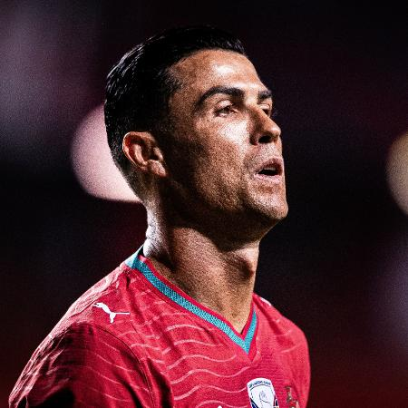
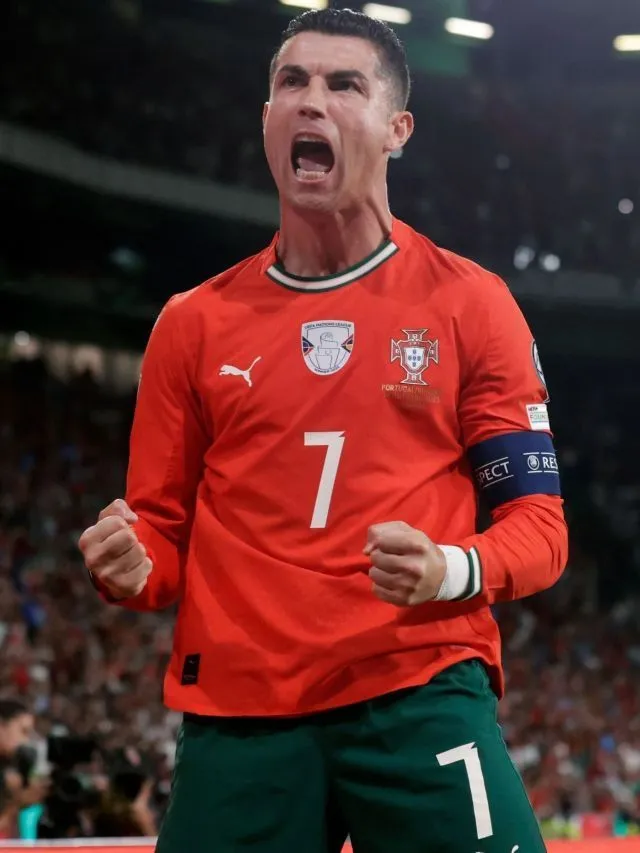

Sobre o Cristiano Ronaldo

O astro de 41 anos detém recordes lendários, como o de maior artilheiro em jogos oficiais do esporte e o feito único de marcar gols em seis edições diferentes da Copa do Mundo.

Cristiano Ronaldo é amplamente reconhecido como um dos maiores jogadores da história do futebol mundial, atuando atualmente como atacante e capitão do Al-Nassr da Arábia Saudita e da Seleção Portuguesa